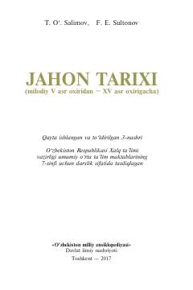

JT7-sinf uchun o'rta asrlar jahon tarixi darsligi.
Mazkur darslik umumiy o'rta ta'lim maktablarining 7-sinfi uchun mo'ljallangan bo'lib, milodiy V asr oxiridan XV asr oxirigacha bo'lgan jahon tarixini (o'rta asrlar davrini) yoritadi. Unda feodal jamiyatining shakllanishi, Yevropa va Osiyo xalqlarining iqtisodiy, siyosiy taraqqiyoti hamda madaniy merosi haqida batafsil ma'lumot beriladi.